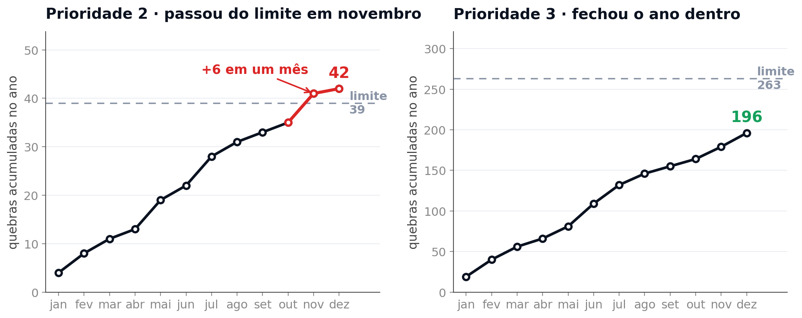
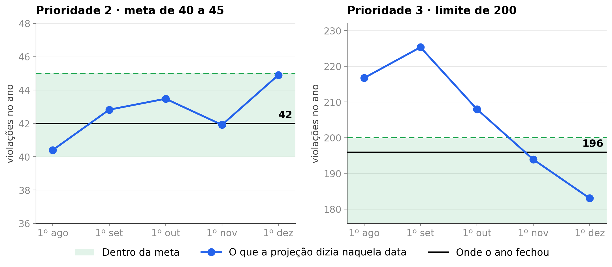

Igor apresenta
Igor apresentao deus grego do tempo
Todo incidente tem um prazo correndo. O Cronos existe para ver o prazo antes de ele estourar.
Igor apresentaO prazo de cada incidente
em três anos
Igor apresentaO ano virou em novembro

Igor apresentaQuantidade de quebras em 2025
Igor apresentaO salto de setembro

no volume total registrado, de agosto para setembro. Multiplicou por 5,4.
na série elegível ao KPI, nos mesmos dois meses. Praticamente o mesmo número.
 Ana apresenta
Ana apresentaPor que treinamos só em 2025

O modelo leria essa subida como tendência de alta, quando ela reflete a adoção do registro no KPI.
Treinar apenas em 2025, com sazonalidade anual desligada.
Ana apresentaDois modelos
Quantos incidentes chegam
A previsão para 1º de outubro de 2025
Qual incidente quebra
As 12 primeiras da fila de 1º de outubro; em vermelho, as que passaram do prazo
Ana apresentaOs próximos sete dias

Cada caixa é a faixa que o modelo deu para o dia, feita em 1º de outubro. O ponto vermelho é o único fora, 1 incidente acima do teto. Na janela de teste inteira a faixa acerta entre 86% e 88% dos dias na prioridade 2 e entre 59% e 61% na prioridade 3.
Ana apresentaA fila de risco

Ordenando por prioridade, que é o que se faz hoje, nenhuma. A regressão logística foi escolhida contra o XGBoost: mesma área ROC (0,87), melhor precisão no evento raro (PR-AUC 0,30 contra 0,25) e calibrada, prevendo 48 quebras onde houve 50. A fila é uma só e cobre as duas prioridades.
Ana apresentaA meta do ano

A projeção soma o que já aconteceu com o ritmo do ano até a data. O ano fechou em 42 na prioridade 2. Na prioridade 3 ela apontou estouro em agosto, setembro e outubro, e o ano fechou em 196, abaixo do limite de 200. Errou nas três para o lado pessimista, que para um alarme de operação é o lado certo de errar.
Ana apresentaOnde agir primeiro
produtos em que o problema já se materializou: perdem prazo acima da mediana e recebem problemas que nunca viram

 Hygor apresenta
Hygor apresentaComo isso roda
 uma imagem Docker
uma imagem Docker


Nenhum serviço proprietário de nuvem no caminho. A imagem sobe onde houver Docker.
Hygor apresentaO painel operacional
As seis telas que a operação abre no dia, com o relógio parado em 1º de outubro de 2025, às 15h.
 Hygor apresenta
Hygor apresentaVeja antes.Aja antes.
O Cronos diz quantos incidentes chegam, quais tendem a passar do prazo e se a meta do ano fecha, antes de dezembro.
Ana Beatriz Costa de Oliveira · Hygor Abrantes · Igor Vignola
Turma 2TSCOA
Igor apresenta